คำตอบโดยสรุป
ให้ \(R_T=R_1+R_2+R_3\) และ \(K=v_s+R_1i_s\)
กระแส
\[ j_1=i_1=i_2=\frac{(R_2+R_3)i_s-v_s}{R_T}, \qquad i_3=-j_1 \]แรงดัน
\[ v_1=-\frac{R_3K}{R_T},\quad v_2=-\frac{R_2K}{R_T},\quad v_3=-\frac{(R_2+R_3)K}{R_T} \]ตรวจทันที: \(v_1+v_2-v_3=0\) ✓
เริ่มจากศูนย์ — เมทริกซ์แต่ละตัวคืออะไร
ทุกเวกเตอร์เรียงตามกิ่ง [1,2,3] เหมือนกันตลอดข้อ ห้ามสลับลำดับกลางทาง
| ตัวแปร | ขนาด | ความหมาย | ค่าในข้อนี้ |
|---|---|---|---|
| \(\mathbf B\) | \(1\times3\) | แถวแทนวง \(j_1\); หลักแทนกิ่ง 1,2,3 | \([1\ 1\ {-1}]\) |
| \(\mathbf B^{\mathsf T}\) | \(3\times1\) | กลับแถวเป็นหลักเพื่อสร้างกระแสกิ่ง | \([1\ 1\ {-1}]^{\mathsf T}\) |
| \(\mathbf Z_b\) | \(3\times3\) | ความต้านทานเรียงตามเลขกิ่ง | \(\operatorname{diag}(R_3,R_2,R_1)\) |
| \(\mathbf i_{sb}\) | \(3\times1\) | แหล่งกระแสในกิ่ง 1,2,3 | \([i_s\ i_s\ 0]^{\mathsf T}\) |
| \(\mathbf v_{sb}\) | \(3\times1\) | แรงดันแหล่งแบบมีเครื่องหมายตามทิศกิ่ง | \([0\ 0\ {-v_s}]^{\mathsf T}\) |
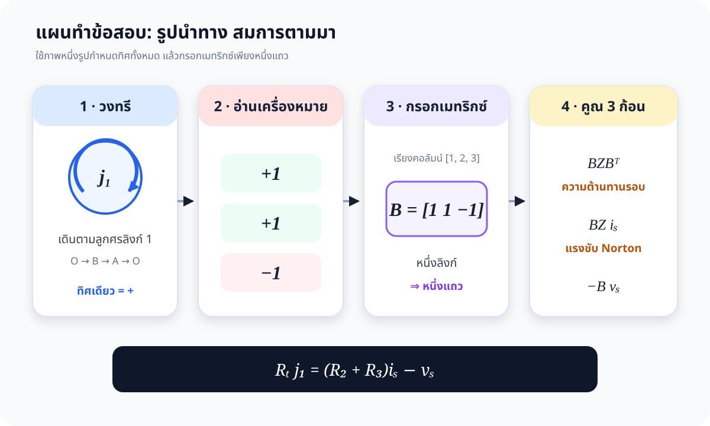
โจทย์และข้อตกลงสัญกรณ์
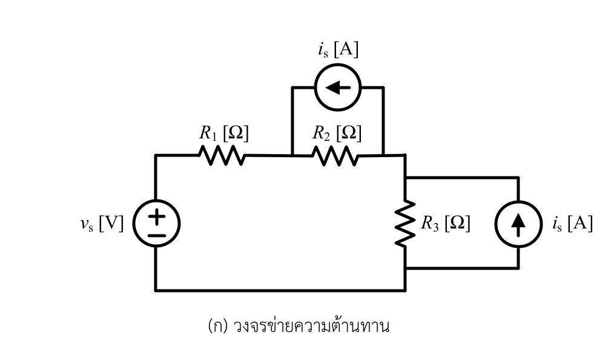
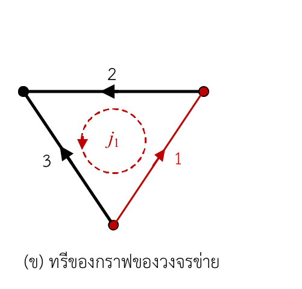
| กิ่ง | ทิศ | องค์ประกอบ | รูปแบบ |
|---|---|---|---|
| 1 | \(O\to B\) | \(i_s\parallel R_3\) | Norton |
| 2 | \(B\to A\) | \(i_s\parallel R_2\) | Norton |
| 3 | \(O\to A\) | \(v_s\) อนุกรม \(R_1\) | Thévenin |
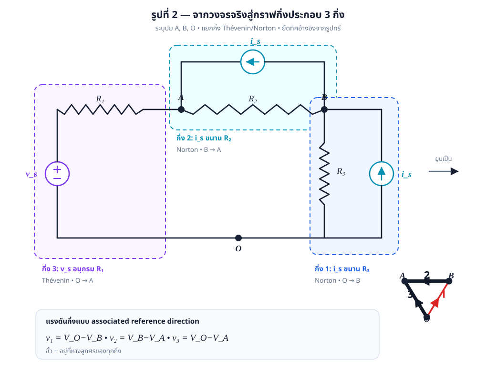
ความสมมาตร Loop / Tie-set กับ Cut-set
วิธีวงรอบใช้กระแสลิงก์ \(l=1\) ตัวเป็นพิกัดของ cycle space ส่วนวิธีชุดตัดใช้แรงดันทวิก \(n-1=2\) ตัวเป็นพิกัดของ cut space ทั้งสองปริภูมิตั้งฉากกัน
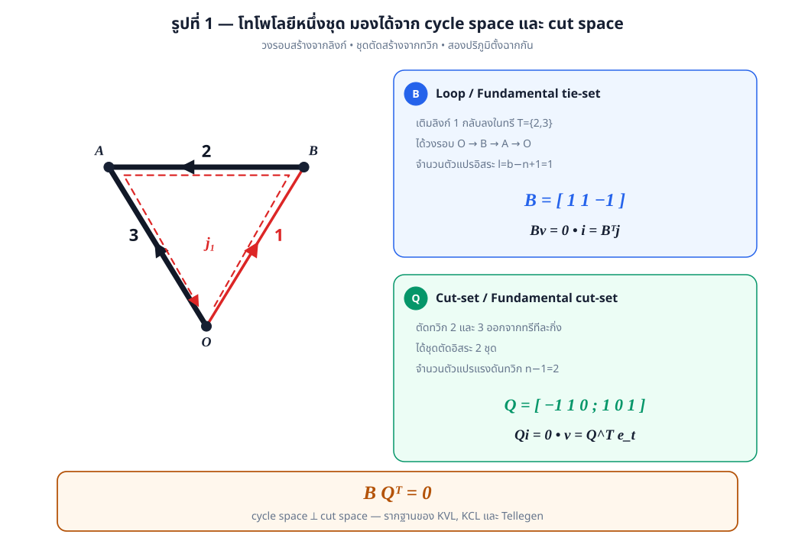
สร้างเมทริกซ์วงรอบหลักมูล \(\mathbf B\)
เดินตามทิศลิงก์ 1: \(O\xrightarrow{1}B\xrightarrow{2}A\xrightarrow{3\ {\rm reverse}}O\) กิ่ง 1 และ 2 จึงได้ \(+1\), กิ่ง 3 ได้ \(-1\)
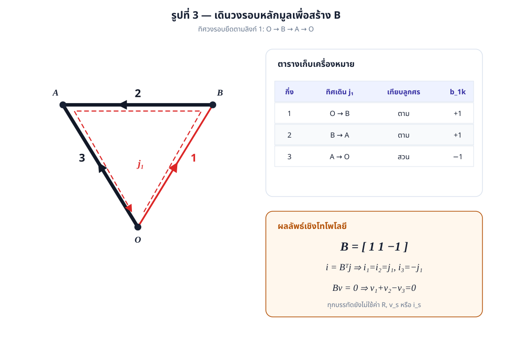
สมการเฉพาะกิ่ง
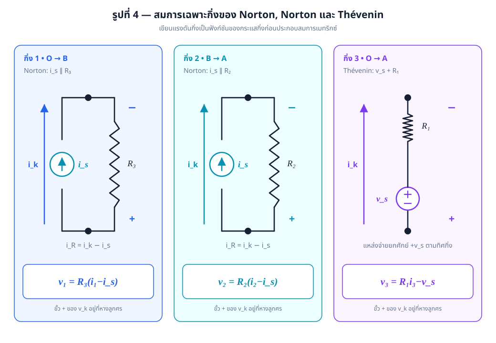
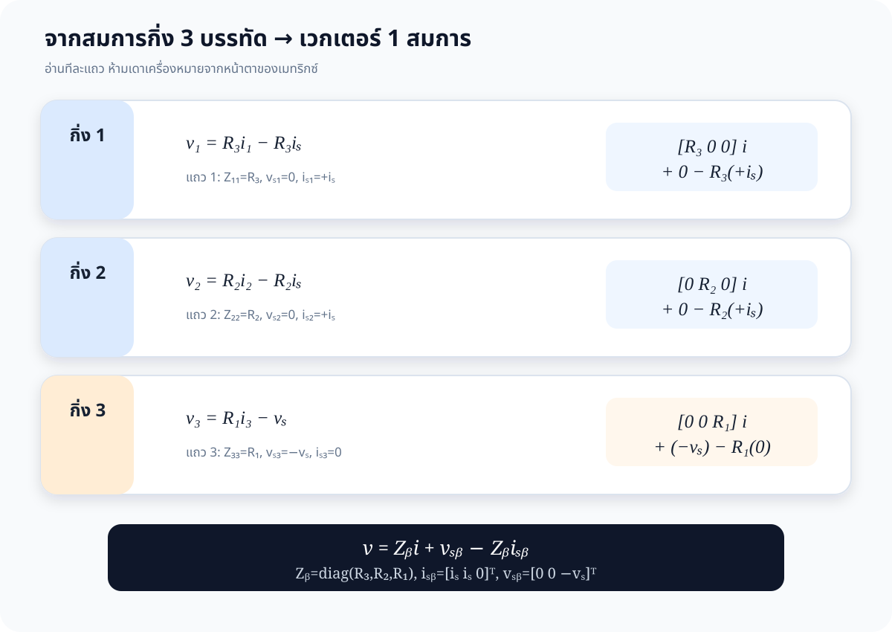
กระจายสมการกิ่งแบบเมทริกซ์ทุกบรรทัด
แถวสุดท้ายให้ \(v_1=R_3(i_1-i_s)\), \(v_2=R_2(i_2-i_s)\), \(v_3=R_1i_3-v_s\) ครบทั้งสามกิ่ง
ประกอบสมการ \(\mathbf B\mathbf Z_b\mathbf B^{\mathsf T}\mathbf j\)
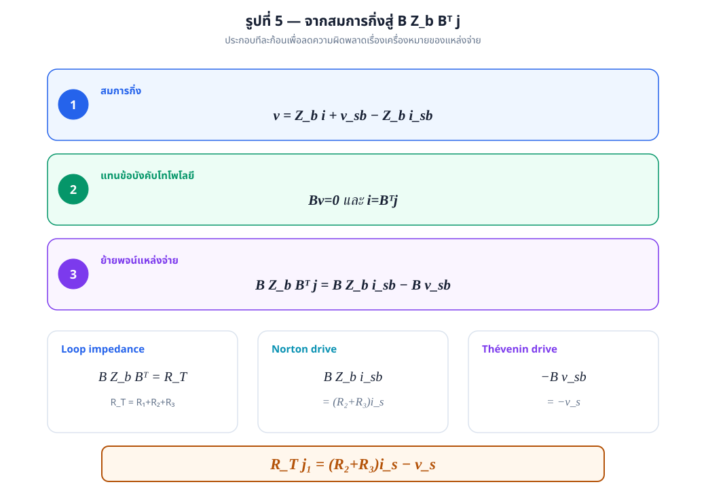
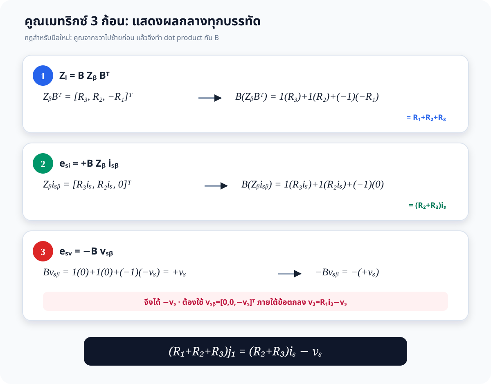
พิสูจน์สมการวงรอบทุกผลคูณกลาง
ก้อน 1 · อิมพีแดนซ์วงรอบ
\[ \mathbf Z_b\mathbf B^{\mathsf T} =\begin{bmatrix}R_3&0&0\\0&R_2&0\\0&0&R_1\end{bmatrix} \begin{bmatrix}1\\1\\-1\end{bmatrix} =\begin{bmatrix}R_3\\R_2\\-R_1\end{bmatrix} \] \[ \mathbf B(\mathbf Z_b\mathbf B^{\mathsf T}) =1(R_3)+1(R_2)+(-1)(-R_1)=R_T \]ก้อน 2 · แหล่งกระแส
\[ \mathbf Z_b\mathbf i_{sb} =\begin{bmatrix}R_3i_s\\R_2i_s\\0\end{bmatrix} \] \[ \mathbf B(\mathbf Z_b\mathbf i_{sb}) =1(R_3i_s)+1(R_2i_s)+(-1)(0)=(R_2+R_3)i_s \]ก้อน 3 · แหล่งแรงดัน
\[ \mathbf B\mathbf v_{sb} =1(0)+1(0)+(-1)(-v_s)=+v_s \] \[ -\mathbf B\mathbf v_{sb}=-(+v_s)=-v_s \]คำตอบเชิงสัญลักษณ์ครบทุกปริมาณ
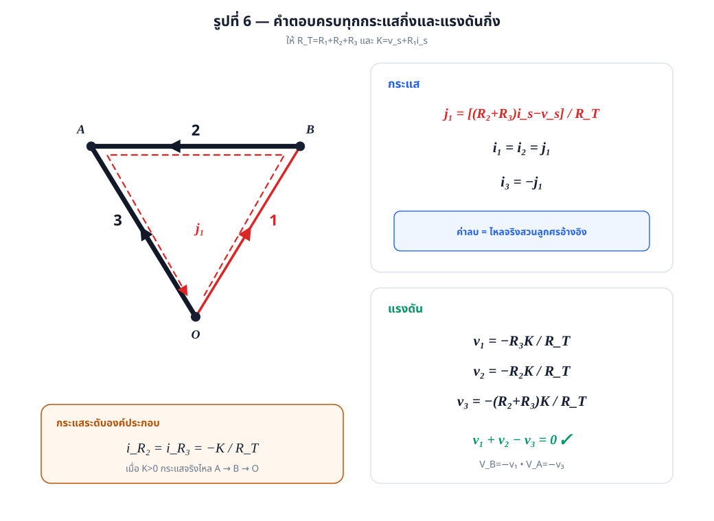
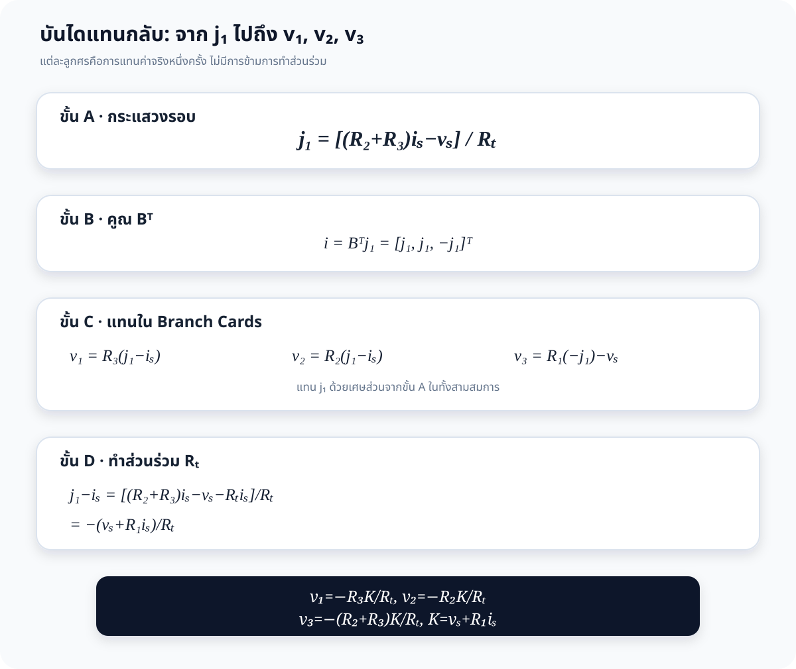
ดูการทำส่วนร่วมเพื่อหาแรงดันกิ่งทุกบรรทัด
ให้ \(K=v_s+R_1i_s\) และ \(R_T=R_1+R_2+R_3\)
\[ j_1-i_s =\frac{(R_2+R_3)i_s-v_s}{R_T}-\frac{R_Ti_s}{R_T} \] \[ =\frac{(R_2+R_3)i_s-v_s-(R_1+R_2+R_3)i_s}{R_T} =-\frac{K}{R_T} \] \[ v_1=R_3(j_1-i_s)=-\frac{R_3K}{R_T},\qquad v_2=R_2(j_1-i_s)=-\frac{R_2K}{R_T} \]สำหรับกิ่ง 3 ใช้ \(i_3=-j_1\):
\[ v_3=-R_1j_1-v_s =-R_1\frac{(R_2+R_3)i_s-v_s}{R_T}-\frac{R_Tv_s}{R_T} \] \[ =\frac{-R_1(R_2+R_3)i_s+R_1v_s-R_Tv_s}{R_T} \] \[ =-\frac{(R_2+R_3)(v_s+R_1i_s)}{R_T} =-\frac{(R_2+R_3)K}{R_T} \]| ปริมาณ | คำตอบ |
|---|---|
| \(j_1\) | \(\dfrac{(R_2+R_3)i_s-v_s}{R_T}\) |
| \(i_1,i_2\) | \(i_1=i_2=j_1\) |
| \(i_3\) | \(-j_1=\dfrac{v_s-(R_2+R_3)i_s}{R_T}\) |
| \(v_1\) | \(-R_3(v_s+R_1i_s)/R_T\) |
| \(v_2\) | \(-R_2(v_s+R_1i_s)/R_T\) |
| \(v_3\) | \(-(R_2+R_3)(v_s+R_1i_s)/R_T\) |
| \(V_B,V_A\) | \(R_3K/R_T,\ (R_2+R_3)K/R_T\) |
ตรวจคำตอบอิสระ 4 ทาง
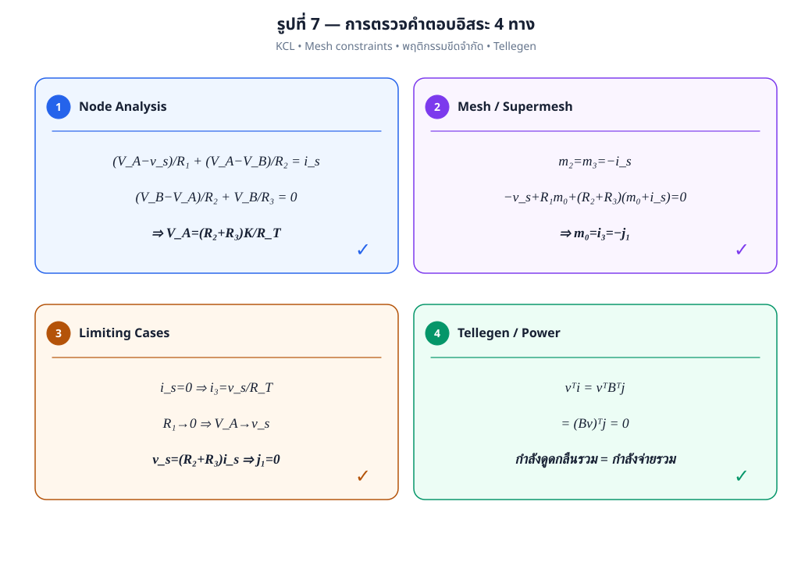
1. Node Analysis
2. Mesh / Supermesh Analysis
เมชเล็กสองเมชถูกกำหนดด้วย \(m_2=m_3=-i_s\) และเมชหลักให้
\[ -v_s+R_1m_0+(R_2+R_3)(m_0+i_s)=0 \Rightarrow m_0=i_3=-j_1 \]3. Limiting Cases
| กรณี | ผล | ความหมาย |
|---|---|---|
| \(i_s=0\) | \(i_3=v_s/R_T\) | วงจรอนุกรม \(R_1,R_2,R_3\) |
| \(R_1\to0\) | \(V_A\to v_s\) | แหล่งแรงดันหนีบปม A |
| \(v_s=(R_2+R_3)i_s\) | \(j_1=0\) | แรงขับสุทธิรอบวงเป็นศูนย์ |
4. Tellegen's Power Balance
ผลนี้ใช้เพียง KVL และ KCL จึงเป็นการตรวจที่ไม่ขึ้นกับรูปสมการขององค์ประกอบ
Numeric Lab — ทดลองแทนค่า
—
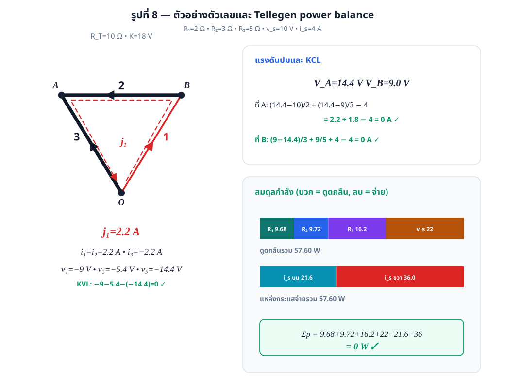
จุดดักและดัชนีเอกสาร
- กิ่ง 2 ชี้ \(B\to A\) จึงเป็น \(+1\) ในวงรอบ \(O\to B\to A\to O\)
- กิ่ง Norton ต้องใช้ \(i_R=i_k-i_s\), ห้ามเขียน \(v_k=R_ki_k\) ตรง ๆ
- แหล่งกระแสสองตัวไม่กลายเป็น \(2i_s\); แต่ให้ \(R_3i_s+R_2i_s\)
- \(v_1,v_2,v_3\) ไม่เท่ากัน เพราะวงจรมี 3 ปม; KVL คือ \(v_1+v_2-v_3=0\)
- ถ้า \(j_1=0\) กระแสกิ่งเป็นศูนย์ แต่กิ่ง Norton ยังมีกระแสหมุนภายในได้